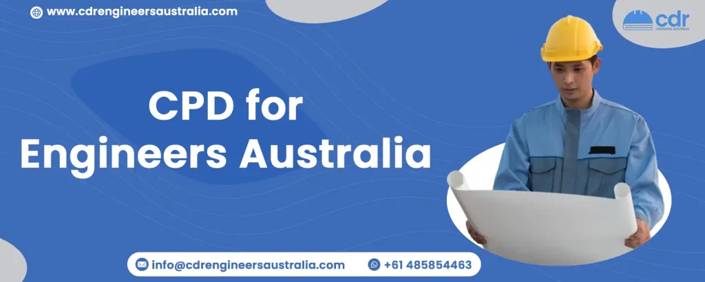

Continuing Professional Development (CPD) for Engineers Australia
Table Of Content
Do you plan to migrate to Australia and work as an engineer? If so, it's important to know that Continuing Professional Development (CPD) is essential to meeting the requirements for obtaining the necessary visas and licenses. CPD enables engineers to keep their knowledge, skills, and expertise up-to-date in response to the evolving demands of their profession.
To support this, Engineers Australia mandates that its members complete at least 150 hours of CPD every three years, to ensure they continue to grow and develop professionally. Let's dive into the topic of Continuing Professional Development (CPD) for Engineers Australia and explore its types, requirements, and available options.
What is Continuing Professional Development?
CPD is an acronym for Continuing Professional Development, which is a way to assess and demonstrate an engineer's knowledge and skills in their field. Engaging in CPD activities ensures that an engineer stays up-to-date with the latest technical developments and maintains their skills and competence throughout their career. There are several ways to engage in CPD, such as attending courses, conferences, workshops, and seminars, and taking part in activities that enhance professional development.
In addition, CPD provides an opportunity to expand professional networks and connections. It is also a requirement for maintaining chartered status with Engineers Australia, which assesses how well an engineer has kept up with their professional development.
CPD Policy for Engineers Australia
Continuing Professional Development (CPD) encompasses any activity that promotes the professional development of an engineer. Engaging in such activities enables engineers to maintain their technical proficiency and advance their careers. By taking part in CPD activities, engineers have an opportunity to enhance their knowledge and skills, and stay abreast of new developments in their field. Engineers Australia has developed a policy guideline for CPD to assist engineers in their professional development.
Its four aspects of policy include the following:
- Engineers Australia requires its engineering professionals who have been members for at least 5 years to maintain Continuing Professional Development (CPD). This involves completing a minimum of 150 hours of CPD activities over the previous three years. However, engineers who have worked part-time or taken a career break within the last three years are exempt from this CPD policy requirement.
- CPD refers to engaging in a range of developmental activities that result in the consistent maintenance, improvement, and expansion of knowledge and skills. This also involves cultivating personal qualities that are essential for carrying out professional and technical duties during an engineer's career.
- The CPD undertaken by a member should assist them in either maintaining or improving their technical competence, management skills, or in supporting, influencing, and leading others.
- Engineers Australia has the authority to carry out audits to ensure that its members are meeting the CPD requirements.
To whom does this policy apply?
- Engineers Australia’s Chartered members
- Applicants for Chartered Status
- NER Registrants
CPD: Types and Conditions for Engineers Australia
Did you know that Engineers Australia has some guidelines for CPD activities? While these guidelines provide a helpful starting point, they’re not the only options available. Engineers can propose any activity that meets the CPD policy requirements. It’s all about being creative and finding unique ways to enhance your skills and knowledge. The types and conditions of CPD includes:
| Types | Conditions |
|---|---|
| a. Tertiary course taken either as an individual course or for a formal postgraduate award. | There is no limit on the maximum number of hours that can be claimed for these activities over a three-year period. |
| b. Taking part in seminars, short courses, technical inspections, meetings, conferences, and workshops. | There is no limit on the maximum number of hours that can be claimed for these activities over a three-year period. |
| c. Workplace learning activities that help improve and expand competence in a specific area of practice. | You can claim up to a maximum of 75 hours of your total CPD for these activities in any three-year period. |
| d. Private study undertaken to enhance one’s knowledge and skills. | Reading the Engineers Australia magazine on a monthly basis can contribute a maximum of 18 hours to your total CPD in any three-year period. |
| e. Community engagement representing the engineering team. | You can claim up to a maximum of 50 hours of your total CPD for these activities in any three-year period. |
| f. The creation and presentation of material for courses, conferences, seminars, and symposia. |
You can claim up to 45 hours per paper for papers
published in journals and conference proceedings, as
well as for preparing material for courses that are
not part of your normal employment function (such as
being a visiting lecturer from industry). You can claim up to 75 hours for each paper that undergoes a rigorous peer review process before it gets published. |
| g. Professionals working in higher education teaching or conducting academic research. | Chartered members working in tertiary teaching or academic research need to show that they have spent a minimum of 40 hours engaging in industry-related activities within three years. |
CPD Requirements for Engineers Australia
Engineers are required to keep a record of their CPD activities for the past three years, totaling 150 hours. Within these 150 hours, they must be able to demonstrate the following:
- Individuals must have completed at least 50 hours of training or education relevant to their professional fields.
- Individuals are required to have completed a minimum of 10 hours of training or education that focuses on managing potential risks.
- Must have completed a minimum of 15 hours of training or education that pertains to developing management skills and competencies relevant to business operations.
- The remaining hours of training or education should be dedicated to activities that are applicable and related to individuals’ respective careers.
- Individuals who work as engineering educators or in academic settings are required to show evidence of 40 hours of Continuing Professional Development (CPD) that have been completed in an industrial environment.
Engineers Australia CPD Record sheet
Engineers Australia offers an internet-based platform for professionals to document, monitor, and manage their Continuing Professional Development (CPD). Members of Engineers Australia can log in to the Engineers Australia portal using their EA IDs to record their CPD activities and track their progress in meeting the CPD requirements. The portal also generates a summary of their CPD, which simplifies the process of evaluating their CPD compliance status.
A CPD record sheet is a document that individuals use to keep a record of their CPD activities. This tool enables professionals to keep track of their CPD requirements by recording essential information about each activity, including the date, number of hours, type of training or education, and provider. By using a CPD record sheet, professionals can monitor their progress in meeting the CPD requirements and identify areas where they need to concentrate their efforts.
A brief manual for writing CPD for Engineers Australia
Engineer’s Australia has specified the criteria for a CPD report and the format it must follow:
- The report should be presented in a list format, organized in chronological order.
- The report must include information regarding any engineering-related activity that was carried out, whether formal or informal.
- The report should not be longer than one page.
- There is no requirement to include certificates for courses or events attended.
Please take note that CPD should encompass performed tasks and certifications as well. If you require any assistance or are unsure about any aspect of the process, please feel free to contact us for support and guidance.
What are CPD Engineering objectives?
Continuing Professional Development activities aim to expand or refresh the expertise, abilities, or decision-making capabilities of a professional within their particular fields of practice. These activities facilitate them to:
- sustain proficiency in the technical aspects of their profession.
- maintain and improve their ability to perform efficiently and productively in their work environment.
- possess the capability to guide, influence, and lead others through setting a good example.
- effectively manage and adapt to any alterations or developments in their professional career.
- improve their capacity to serve and contribute to the welfare of the community.
Conclusion
CPD is crucial for engineers in Australia to stay relevant, enhance their knowledge, and maintain their professional competency. With the rapid pace of technological advancements, changes in regulations, and new industry practices, it is essential for engineers to engage in lifelong learning and stay up-to-date with the latest trends and developments in their field. At CDR Engineers Australia, our services encompass the creation of CDR reports that incorporate CPD, career episodes, and summary statements. We assure our clients a 100% success rate, and our team of professionals specializes in analyzing CDR reports, evaluating Stage 2 Competency Standards, writing summary statements, and facilitating CPD and related activities. We have all the necessary resources and expertise required to offer you the essential support to help you attain your objectives.